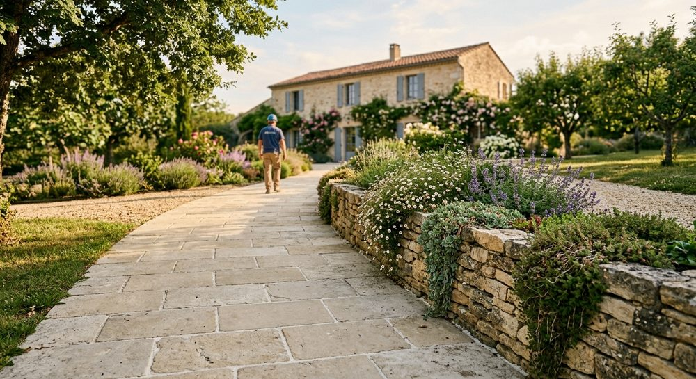
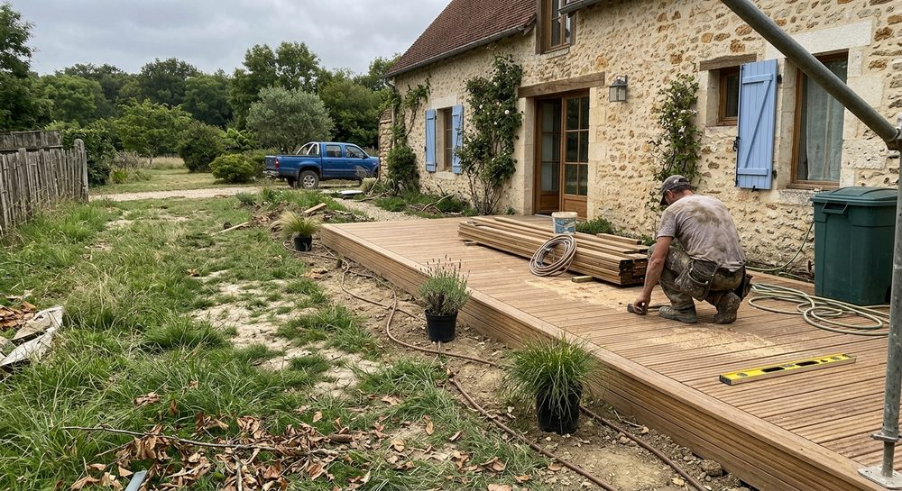
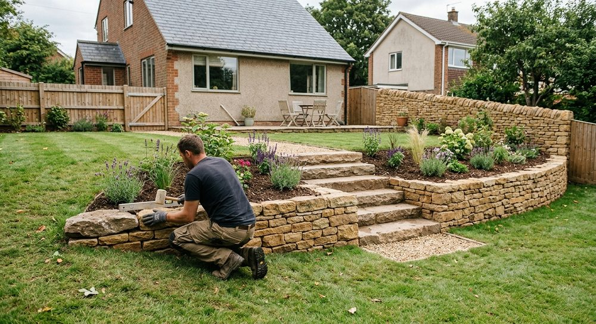
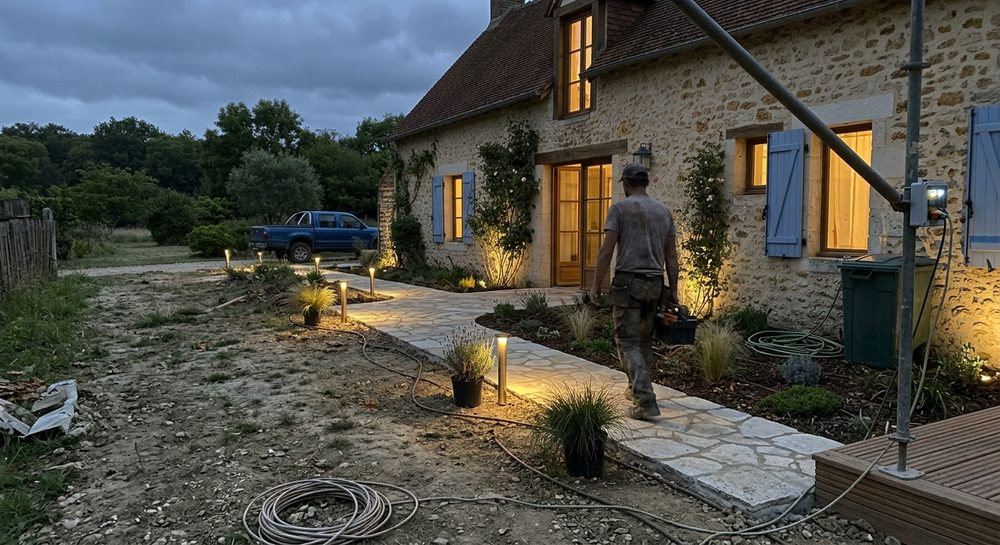
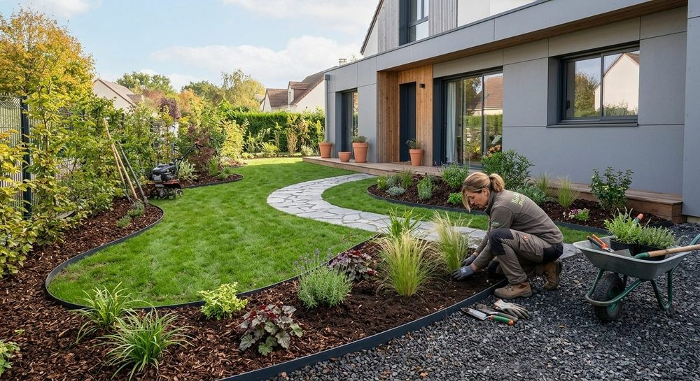
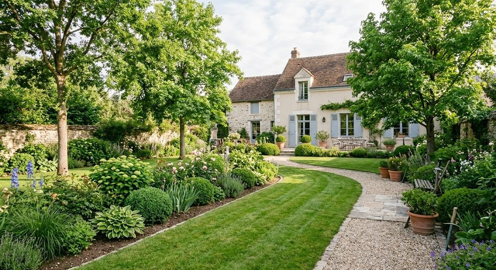
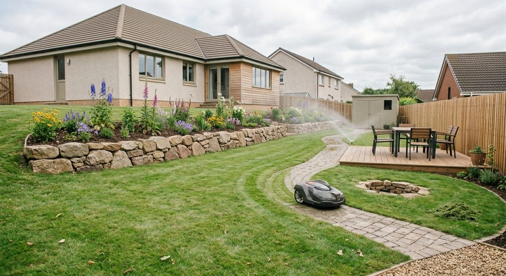
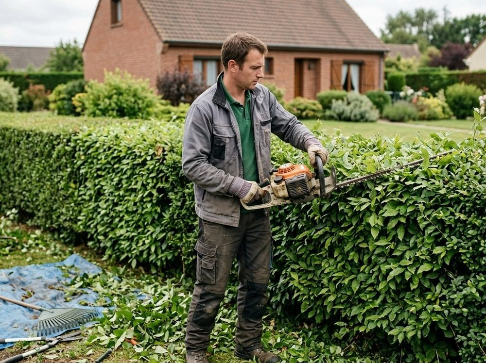

Entretien de jardin
Un suivi régulier pour un jardin net toute l’année.
Entretien, taille de haies, pelouse et création d’espaces verts : Chaumont Espaces Verts prend soin de votre extérieur.



Un suivi régulier pour un jardin net toute l’année.
Une pelouse nette et bien tenue, saison après saison.
Des haies taillées proprement pour structurer votre jardin.
Création et entretien : plantations, massifs et pelouse.

Allées, terrasses, plantations : décrivez votre projet par téléphone et demandez un devis.

Pelouse, plantations, massifs : un espace vert créé puis entretenu dans la durée.



Un appel suffit pour décrire votre projet.
© Chaumont Espaces Verts · Maquette de démonstration